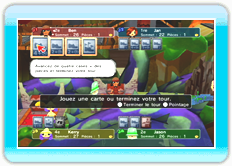
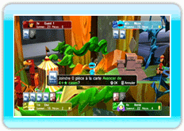
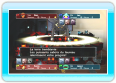
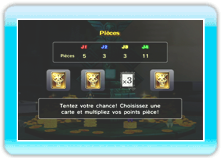
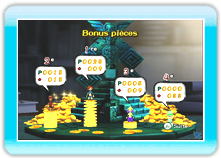

5 |
Bienvenue! |
 |
|
●
Qu’est-ce que PictureBook Games: Pop-Up Pursuit?

PictureBook Games: Pop-Up Pursuit est un jeu de société se déroulant dans le monde coloré d’un livre animé. À la différence de la plupart des jeux de ce genre, vous utilisez ici des cartes et des pièces à la place des dés habituels pour avancer sur la carte. Familiarisez-vous avec les différentes sortes de cartes et leurs effets, et dirigez-vous droit vers la ligne d’arrivée!
・
Utilisez les pièces de manière stratégique

À l’aide des pièces, vous pouvez augmenter le nombre de cases à franchir après l’utilisation de certaines cartes. Vous pouvez aussi vous en servir pour acheter des cartes si vous tombez sur la case « Le bazar de cartes »!
・
Mais que cache donc le Livre Magick?

Certaines cases renferment un Livre Magick. Arrêtez-vous dessus et le livre s’ouvrira! Chacune de ses pages produit un effet différent. Quel sort vous réserve-t-il?
・
Renversez la vapeur en amassant des pièces!
Une fois la partie terminée, chaque joueur reçoit un bonus classement. De plus, les joueurs peuvent recevoir un bonus pièces qui transforme les pièces de tous les joueurs en points. Le pointage final est déterminé en additionnant les deux bonus. Par conséquent, même si vous n'êtes pas le premier à atteindre le sommet de la carte, si vous avez amassé un maximum de pièces vous pouvez toujours renverser le résultat final selon le bonus pièces.

|
 |
 |
 |